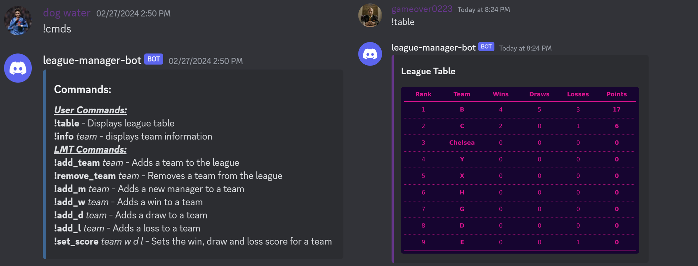

League Manager Bot
The league manager discord bot assists groups based within discord servers in coordinating gaming tournaments seamlessly. With a comprehensive list of commands, users can efficiently access various functionalities. Commands used for reading data, such as viewing the league table, are accessible to all users, while commands that involve writing data are restricted to users that hold a specific role within their Discord server. This bot is hosted on bot-hosting.net, which ensures 24/7 availability for users.
Skills and methods:
- Python: Language employed for programming the bot and leveraging useful libraries throughout this project.
- Discord library (discord.py): was utilized to develop functions triggered by specific events on the Discord server, such as user command inputs.
- Pandas: Used to read, write, and organize the league data, which is stored in a csv file.
- Matplotlib: Used to create visually appealing league tables based on the data extracted from the CSV file.